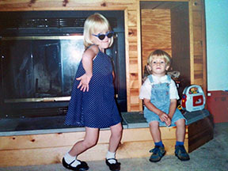
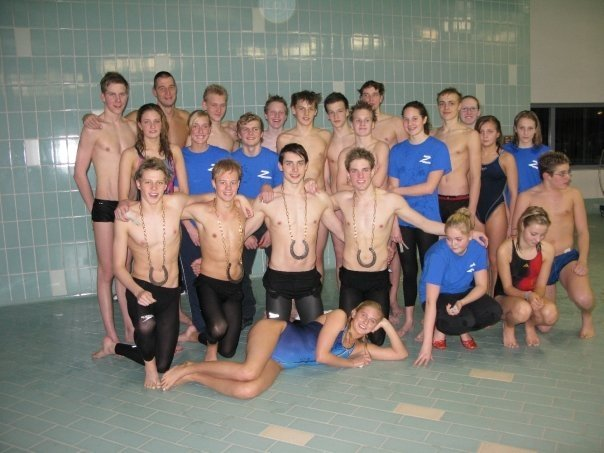
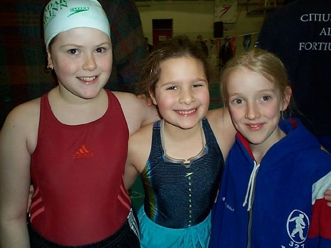

My name is Hrafnhildur Luthersdottir but I go by Hilda for short. I was born in Reykjavik, Iceland in 1991 and my family moved to Connecticut right after I was born. We lived in Connecticut and Pennsylvania for eight years before we finally moved back to Hafnarfjordur, Iceland. I lived there for about 11 years before moving to Gainesville, FL, for college.
I am a senior Public Relations major at the University of Florida. I am set to graduate in December 2015.
I am also an Olympic swimmer from Iceland and currently swim collegiately with the Florida Gators. I am planning on competing at the 2016 Olympics in Rio.
I tried every sport available when I was younger; soccer, track, ballet, basketball, gymnastics, karate, you name it. It wasn't until I tried swimming that I finally found my calling. I have constantly been swimming for over 13 years now and I can't imagine my life without it.
I am grateful for everything swimming has done for me, including traveling the world and getting me into college. I have learned so many valuable skills from swimming, like time management and perseverance.